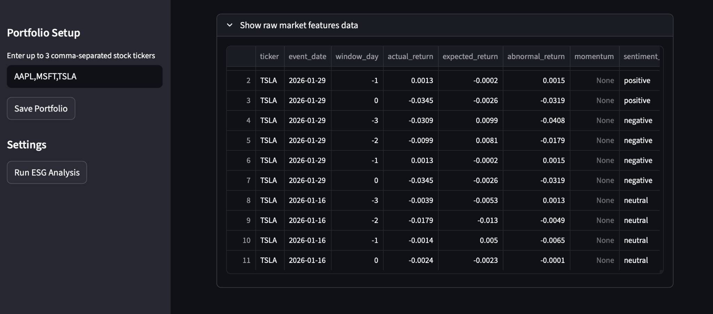
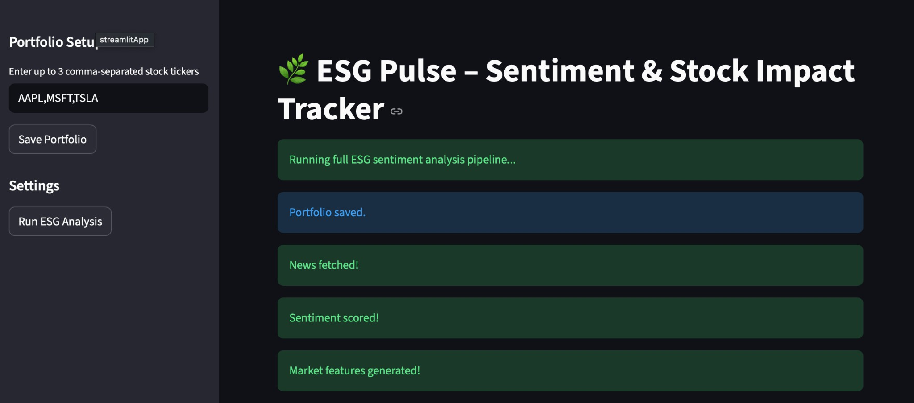
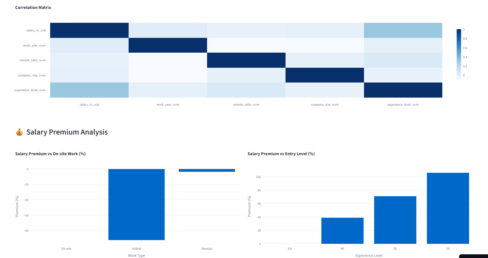
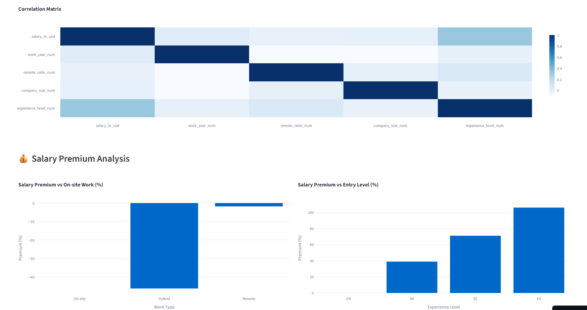
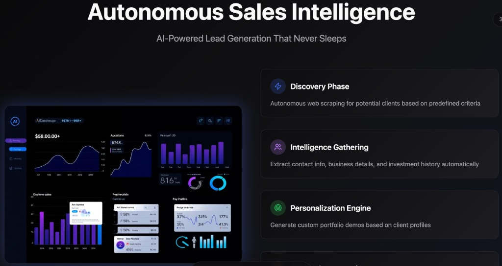
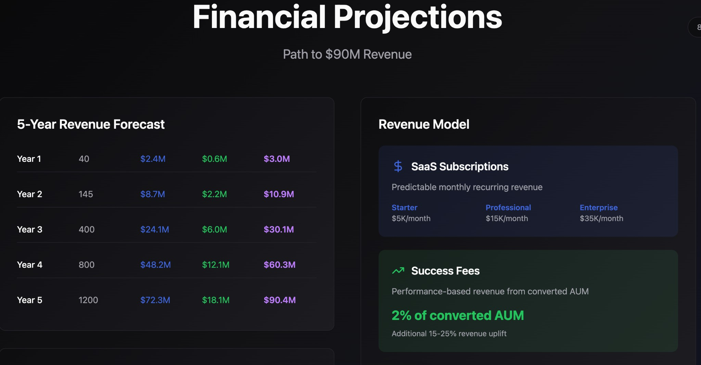
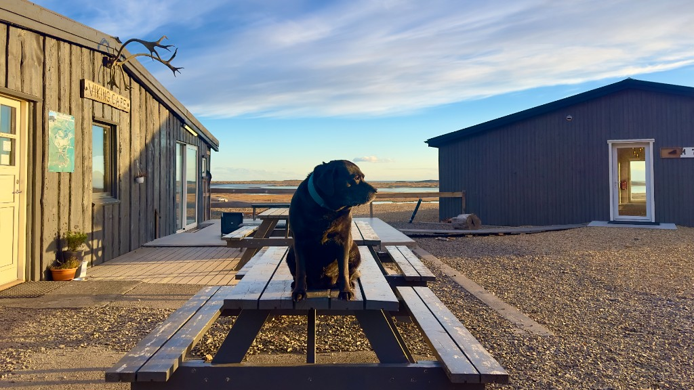

Hello, I'm
Prasanna Jain
I build
Seattle, WA
Data Analyst & AI Entrepreneur passionate about transforming unstructured data into actionable insights—bringing data analysis and AI to innovation-driven problems.
Scroll
About Me
A data-driven innovator with 2+ years of experience in data analysis and large-scale analytics systems
Currently pursuing an MS in Business Analytics at the University of Washington, Foster School of Business. My passion lies at the intersection of AI, business analytics, and automation.
I thrive on transforming unstructured data into actionable insights and building tools that support smarter decision-making and customer solutions. My experience spans market research and sentiment analysis to automated workflows and data pipelines.
Education
MS Business Analytics
University of Washington, Foster School of Business (2025 – present)
B.Tech Computer Science
Symbiosis Institute of Technology, Pune, India
Leadership
Mental Health Committee Director
Reverb 2020, Symbiosis
Initiated mental health awareness campaigns reaching 100+ individuals. Presented research at ALPFA Pre-Convention Workshops.
Business Analysis · Work Sample
BA Case Study
End-to-end requirements work from discovery through traceability — stakeholder interviews, process mapping, user stories, and functional specifications.
Background
AB's Operations team produced daily shareholding reports for internal compliance and external counterparties. The reconciliation process — matching internal records against custodian feeds — was largely manual, spreadsheet-driven, and error-prone. Discrepancies routinely surfaced after the fact, triggering costly downstream corrections.
This project was initiated after a series of reconciliation failures that cost the firm significant remediation time and exposed latent data-quality risks in the reporting pipeline.
This project was initiated after a series of reconciliation failures that cost the firm significant remediation time and exposed latent data-quality risks in the reporting pipeline.
Problem Statement
Operations analysts cannot reliably reconcile shareholding data because validation rules are undocumented and inconsistent across upstream feeds. This results in manual workarounds, delayed reporting, and an inability to audit discrepancies — exposing the firm to compliance risk and remediation costs.
Discovery Approach
I led the requirements discovery phase using structured stakeholder interviews, workflow observation, and document review. The goal was to understand not just what was breaking, but why — so requirements would address root causes rather than symptoms.
Stakeholders Engaged
| Stakeholder Group | Role in Process | Key Concerns Surfaced |
|---|---|---|
| Operations Analysts | Primary reconcilers; daily users | No single source of truth; manual matching across 3 systems |
| Data & Analytics Team | Downstream consumers of outputs | Inconsistent field definitions across feeds; unreliable timestamps |
| Compliance Officers | Audit and sign-off | No audit trail; inability to explain discrepancies retroactively |
| Technology / Engineering | System owners | No clear validation rules documented; ad hoc fixes piling up |
Key Findings from Discovery
-
No canonical 'matched' record definition. Validation rules were inconsistent across three upstream data feeds — each team was using different field mappings.
-
11 manual handoffs in the current-state process, each a potential point of error or delay.
-
No reconciliation history. Compliance had no way to reconstruct the reconciliation state for a given report — audit risk was high.
-
Reactive engineering. The team had been patching issues without a documented spec, creating compounding technical debt.
⚠ Current State — Manual Reconciliation (11 handoffs)
1
Pull custodian feed manually
2
Open position report in Excel
3
Cross-ref 3 systems manually
~3 hrs / report
~3 hrs / report
4
Flag discrepancies in spreadsheet
5
Email report to Ops Lead
No audit trail
No audit trail
6–7
Review / approve via email
Avg. 6 hr delay
Avg. 6 hr delay
8–9
Manual rework loop
~$500K/yr remediation
~$500K/yr remediation
10–11
Final sign-off & file
✓ Future State — Automated Reconciliation System
1
Scheduled ingest (6AM PT) — all feeds normalized
2
Canonical validation rules applied — auto-match
3
Exception queue generated — analyst reviews only exceptions
4
Resolve or escalate in-app with notes
5
Compliance sign-off in-app
6
Full audit trail written automatically
~3 hrs saved
per report — automated ingestion eliminates 3-system manual cross-reference
6 hrs → <1 hr
review cycle reduced via in-app exception workflow with full audit trail
~$500K/yr
annual remediation savings from canonical validation rule engine
Zero gaps
compliance can now reconstruct any report's full history for regulatory review
The following user stories were derived from stakeholder interviews and validated with each persona group before being handed off to engineering and QA. Stories are written to the INVEST standard (Independent, Negotiable, Valuable, Estimable, Small, Testable).
US-01
Persona: Operations Analyst
Must Have — Sprint 1
Automated Feed Ingestion
"As an Operations Analyst, I want custodian data feeds to be ingested automatically each morning so that I don't have to manually pull and format data before I can begin reconciliation."
Acceptance Criteria
- all three custodian feeds are available at 6:00 AM PT → all feeds ingested and normalized within 15 minutes
- a feed is unavailable or malformed → automated alert sent to ops team within 5 minutes of failure
- ingestion succeeds → dashboard shows ingestion timestamp, record count, and source for each feed
- a partial feed arrives (missing expected records) → feed flagged as incomplete; auto-matching blocked until reviewed
📝 Trigger time may shift to 5:30 AM pending compliance sign-off on SLA. Engineering to confirm feed format specs with custodians.
US-02
Persona: Operations Analyst
Must Have — Sprint 1–2
Automated Record Matching with Canonical Validation Rules
"As an Operations Analyst, I want the system to automatically match records across feeds using standardized validation rules so that I only need to review exceptions, not perform the full match manually."
Acceptance Criteria
- all feeds ingested → records matched on [CUSIP + date + quantity] within tolerance of ±0.01 shares
- a record matches → marked 'Reconciled' and excluded from exception queue
- a record fails to match → appears in exception queue with specific mismatch field(s) highlighted
- matching run completes → dashboard shows total records, matched count, exception count, and match rate %
- a validation rule changes → change logged with author, timestamp, and previous value
📝 Matching tolerance of ±0.01 confirmed with Compliance. Rule versioning requirement added after compliance review session.
US-03
Persona: Operations Analyst / Ops Lead
Must Have — Sprint 2
Exception Management & Escalation Workflow
"As an Operations Analyst, I want to review, resolve, and escalate exceptions within the application so that all reconciliation actions are tracked and auditable without relying on email."
Acceptance Criteria
- I open an exception → see mismatched fields, source values from each feed, and full record history
- I resolve an exception → must enter resolution reason from controlled vocabulary (dropdown); free-text optional
- I select 'Escalate' → exception assigned to Ops Lead queue with mandatory reason field and email notification
- exception unresolved after 4 business hours → automated reminder sent to assigned analyst and Ops Lead
📝 Controlled vocabulary for resolution reasons to be finalized with Ops Lead and Compliance in workshop. SLA timing to be confirmed.
US-04
Persona: Compliance Officer
Must Have — Sprint 3
Audit Trail & Compliance Reporting
"As a Compliance Officer, I want a complete, tamper-proof audit trail of every reconciliation action so that I can reconstruct the history of any report for regulatory review."
Acceptance Criteria
- any action is taken (match, exception, resolution, sign-off) → logged with user ID, timestamp, action type, record ID
- I search by date or report ID → view full reconciliation state as it existed at any point in that report's lifecycle
- I click 'Export' → PDF generated within 30 seconds containing all records, match status, exceptions, resolutions, sign-offs
- any user (including admin) attempts to modify an audit log entry → system rejects modification and logs the attempt
📝 Immutability requirement added after legal review. CSV export also desired for Phase 2.
Excerpt from the functional requirements specification covering the Exception Management Module. The full specification included 28 functional requirements, 9 non-functional requirements, and 4 integration requirements.
Functional Requirements — Exception Management Module
| Req ID | Category | Requirement | Priority |
|---|---|---|---|
| FR-10 | Exception Display | The system shall display all unresolved exceptions in a queue sorted by age (oldest first) with filtering by status, analyst, and date range. | Must Have |
| FR-11 | Exception Detail | For each exception, the system shall display: mismatched field name(s), value from each source feed, record creation timestamp, and full match attempt history. | Must Have |
| FR-12 | Resolution Submission | The system shall require a resolution reason selected from a controlled vocabulary before an exception can be marked resolved. Free-text notes are optional. | Must Have |
| FR-13 | Escalation | The system shall allow analysts to escalate exceptions to the Ops Lead queue. Escalation shall require a mandatory reason field and shall automatically notify the Ops Lead via email. | Must Have |
| FR-14 | SLA Alerting | The system shall send automated reminders to the assigned analyst and Ops Lead when an exception remains unresolved for 4 business hours. | Should Have |
| FR-15 | Audit Logging | Every action taken on an exception (view, resolution attempt, resolution, escalation, sign-off) shall be logged with user ID, action type, timestamp, and record ID. Logs shall be immutable. | Must Have |
| FR-16 | Bulk Actions | The system shall allow analysts to select multiple exceptions and apply a single resolution reason in bulk, subject to Ops Lead approval for batches > 10 records. | Could Have |
Non-Functional Requirements
| Req ID | Category | Requirement | Acceptance Measure |
|---|---|---|---|
| NFR-01 | Performance | The exception queue shall load within 3 seconds for up to 500 records on a standard corporate network connection. | Load time ≤ 3s at p95 in load testing |
| NFR-02 | Reliability | The reconciliation matching engine shall achieve 99.5% uptime during business hours (6 AM – 8 PM PT, Mon–Fri). | Monitored via uptime dashboard; SLA tracked monthly |
| NFR-03 | Audit Integrity | Audit log entries shall be immutable and protected against modification by any user role, including system administrators. | Verified via penetration test and role-based access audit |
| NFR-04 | Usability | A new Operations Analyst with no prior system training shall be able to resolve a standard exception without assistance within 10 minutes. | Validated via usability test with 3 new analysts |
Requirements Traceability (Excerpt)
| Req ID | User Story | Business Need | Test Case(s) |
|---|---|---|---|
| FR-10 | US-03 | Analysts need visibility into all exceptions without manual tracking | TC-21, TC-22, TC-23 |
| FR-12 | US-03 | Compliance requires documented rationale for every resolution | TC-28, TC-29 |
| FR-15 | US-04 | Legal requires tamper-proof audit trail for regulatory review | TC-41, TC-42, TC-43 |
| NFR-03 | US-04 | Legal requires immutability even from admin access | Security Test ST-07 |
What I'd do differently with more time — and what this project reinforced about BA practice:
1
Run a formal usability test before finalizing FR-10/FR-11. I captured the exception queue display need from stakeholder interviews, but didn't validate the specific display logic with analysts actually performing the task. A lightweight prototype test would have caught UI edge cases earlier and reduced rework in QA.
2
Develop a formal impact assessment for the escalation workflow change. Ops leads flagged in UAT that their queue volume increased — a consequence we could have anticipated and communicated earlier with structured change impact analysis across people, systems, and operations.
3
Lock the controlled vocabulary for resolution reasons earlier in the process. Finalizing it in a workshop during Sprint 2 created a brief dependency delay for engineering. In future projects, I'd treat controlled vocabulary definition as a discovery-phase deliverable, not a design-phase one.
Full Work Sample Available
Includes complete process diagrams, all 4 user stories with acceptance criteria, and the full requirements specification.
↓ Download Full Work Sample
Includes complete process diagrams, all 4 user stories with acceptance criteria, and the full requirements specification.
Featured Projects
Building the future, one line of code at a time


ESG Sentiment Agent
An AI-powered web application for market and sentiment analysis: analyzes news sentiment and quantifies its influence on returns for custom portfolios. Combines NLP, sentiment scoring, regression analysis, and data visualization.
Use case: Market research, sentiment tracking, and data-driven decision support.
Launch Live App
SDG Gender Index Visualization
A comprehensive data visualization project analyzing gender equality across 129 countries using the SDG Gender Index. This interactive dashboard explores girls' secondary school completion rates, regional performance comparisons, and correlations with overall gender equality metrics.
Use case: Gender equality research, policy analysis, and understanding global trends in girls' education and gender equity.
 



Data Jobs Salary Analysis
A personal project analyzing real salary data reported by employees all over the world, mainly North America. Comprehensive dashboard providing insights into data science salaries across experience levels, regions, and work types.
Use case: Salary benchmarking, career planning, and understanding market trends for data professionals.
Launch Live App


Sage AI Platform
Founder of a sales automation platform leveraging AI for lead sourcing and outreach. Built a scalable workflow that identifies decision-makers, gathers contact and business data, and supports personalized outreach—combining data analysis with customer-focused solutions.
Use case: Market research, lead intelligence, and innovation-driven outreach.
Experience
My professional journey in data analysis, engineering, and AI
MS Business Analytics Student
2025 – presentFocusing on advanced analytics, machine learning, and business intelligence. Developing expertise in data analysis, modeling, and AI applications in business and engineering contexts.
Data Analyst
2022 – 20242+ years of experience engineering scalable data pipelines, implementing ETL processes, and building analytics infrastructure. Specialized in data analysis and transforming unstructured data into actionable business insights.
Mental Health Committee Director
2020Led mental health awareness initiatives reaching 100+ individuals. Presented research findings at ALPFA Pre-Convention Workshops, demonstrating leadership in social impact, writing, and public speaking.
Beyond Code
The human side of a data engineer
Travel & new things
I like to travel and learn new things.

Thor
World's best boy.
Tech & Innovation
- Open Source Contributing
- AI Ethics Research
- Hackathons
Leadership & Community
- Mentoring Students
- Public Speaking
- Model United Nations
Personal Interests
- Photography
- Tech Blogging
- Football
Speaking & Writing
- Workshop Facilitation
- Technical Writing
- Conference Talks
Let's Build Cool Stuff Together
Ready to collaborate on your next data project or AI innovation?